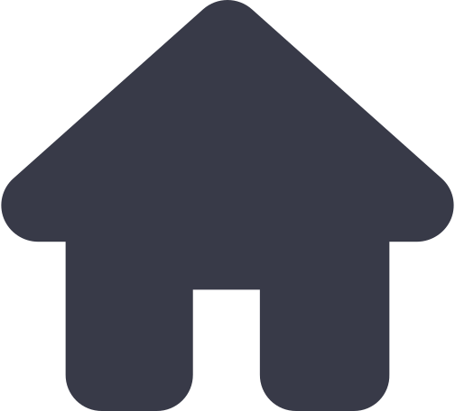

Equinix

Home
Suporte
Acompanhe seus dados de temperatura e umidade por meio da sua Dashboard
Umidade mais alta registrada no ultimo
mês
60%
Umidade mais baixa registrada no ultimo mês
40%
Temperatura mais alta registrada no ultimo mês
29ºC
Temperatura mais baixa registrada no ultimo mês
18ºC